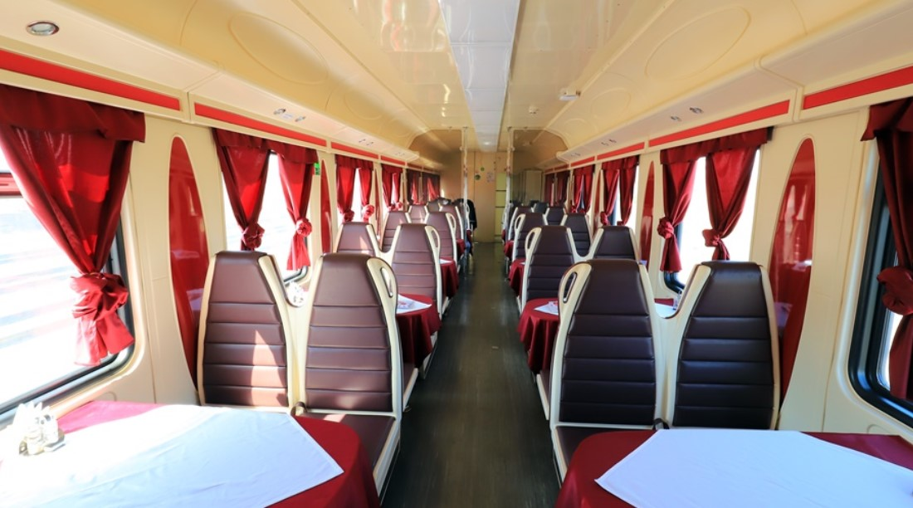
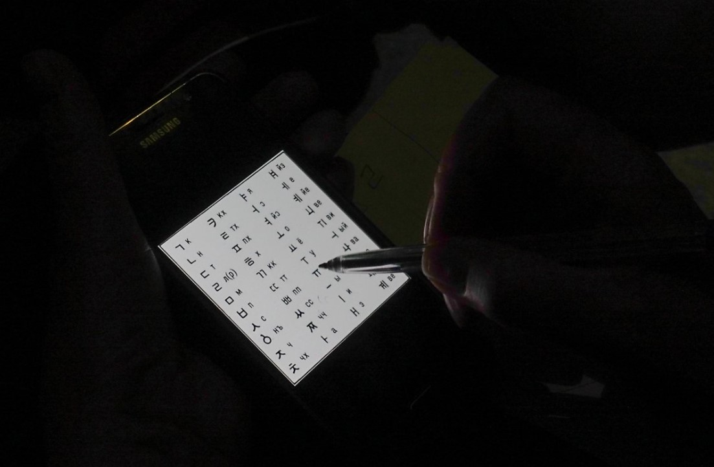
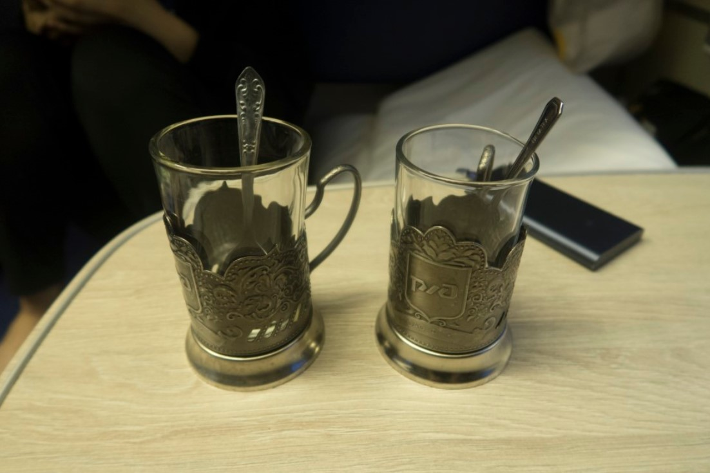
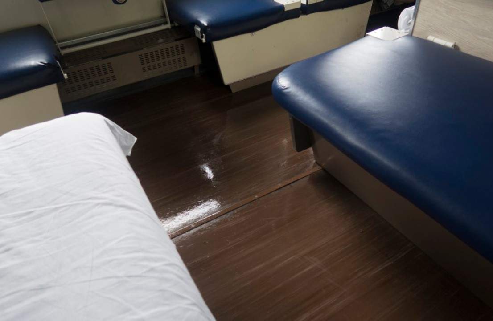
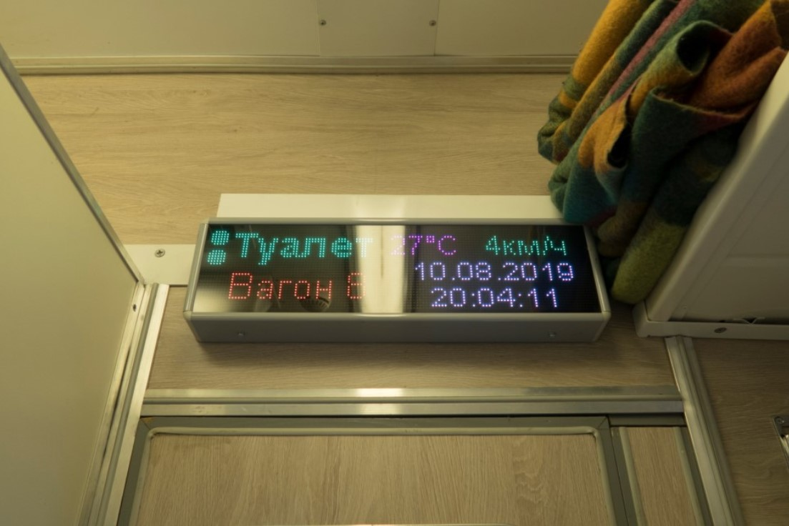

Q. 먹을것은 어떻게 구하나요?

시베리아 횡단열차 여행을 하면서 음식을 얻을 수 있는 방법은 여러가지가 있습니다.
1. 미리 식량을 준비해가는 방법
한국에서 식량을 챙겨서 가는 방법인데요. 열차에선 뜨거운 물을 무제한으로 이용할 수 있기 때문에 컵라면이나 티백들을 챙겨가면 좋습니다. 따로 조리가 필요없는 캔, 과자 등 간편식을 챙겨가는 것이 좋습니다.

2. 시베리아 횡단열차 식당칸을 이용하는 방법
식당칸은 보통 오전 9시부터 오후 11시까지만 운영합니다. 매일 간편식 먹기 질릴 때 한 번 가보는 것을 추천합니다. 가격은 조금 비싼 편지만, 메뉴가 다양하고 맥주도 판매합니다. 대부분 바이칼 호수를 지나는 시간대에 맞춰 식당칸에서 풍경을 바라보며 식사를 합니다.

3. 해당 칸의 차장님에게 먹을 것을 사는 방법
기차 안에는 간이 매점이 있습니다. 찬물 정수기는 없기때문에 생수를 구매하는 것은 필수입니다. 차장님 방에는 전자레인지가 있어서 차장님님과 친해지면 전자레인지를 사용할 수 있게 해줄 수도 있습니다.

4. 정차하는 역에 내려 매점을 이용하는 방법
시베리아 횡단열차 시간표에 적혀있는데오 정차, 출발을 반복합니다. 짧게는 2분, 길게는 30분정도 정차하니 잘 참고해서 열차를 놓치지는 불상사가 일어나지 않게 주의하세요. 오랫동안 정차하는 역 같은 경우 간이매점처럼 음식이나 물을 살 수 있는 장소가 있어서 이때 음식을 사두면 됩니다. 신선식품을 팔고있는 정차역도 있는데 모든 정차역에서 팔지 않으니깐 보이면 사는 것을 추천합니다.
밥 시간은 따로 없고 개인적으로 먹고 싶을 때 먹으면 됩니다. 아무래도 좁고 같이 있는 공간이다보니 냄새 나는 음식을 웬만해서는 먹지 않는 게 사람들끼리에 매너입니다. 내가 먹는 음식이 너무 냄새가 나지 않을까, 신경이 쓰인다면 내 앞자리에 앉은 사람이 뭘 먹나 얼추 그에 맞춰 먹으면 됩니다.
Q. 옷은 어떻게 입어야하나요?
시베리아 횡단열차는 외부온도와 관계없이 실내온도를 23~25℃를 유지하기 때문에 열차 내에서는 편하게 반팔 반바지를 입고, 추우면 담요를 덮는 것을 추천합니다. 하루종일 거의 열차에 있는 것이기 때문에 트레이닝복같이 편한 옷이 좋습니다. 슬리퍼도 챙기면 열차에서 편하게 지낼 수 있습니다.
열차 안에서 빨래는 거의 불가능하기 때문에 얇은 옷 여러 벌을 챙기는 것을 추천하고, 입었던 옷을 넣은 봉투나 가방도 챙기면 좋습니다.
Q. 잠과 씻는 것은 어떻게 하나요?

1. 화장실은 칸 맨 앞, 맨 뒤에 하나씩 총 두개가 있습니다. 화장실에는 휴지가 비치되어 있지만, 질이 안좋아서 개인 휴지를 들고 가는 것을 추천합니다. 정차 앞 뒤 10분씩은 화장실을 이용할 수 없습니다. 이 점은 기차마다 다를 수 있기 때문에 확인해보는 것이 좋습니다.
2. 신식열차 기준, 시베리아 횡단열차에서 목욕이 가능하며 150루블(2200원)에 10분간 따뜻한 샤워가 가능합니다. 구식 열차는 거의 몸은 못씻는다고 보면 되고, 머리는 간신히 감기 가능한 정도입니다.
3. 침대 커버, 이불, 베개, 수건 1장을 열차에서 제공해줍니다. 그래도 밤에는 추울 수 있어 따로 담요를 더 챙겨가는 것도 좋습니다.취침시간은 9~10시로 일정하게 불을 꺼줍니다.
Q. 알고가면 좋은 정보들 있나요?

러시아에는 기본적으로 영어를 잘 사용하지 않습니다. 역무원들도 영어를 전혀 하지 못합니다.
열차에서 만난 사람들과 대화할 땐 바디랭귀지를 자주 사용하며, 데이터가 터지지 않기 때문에 오프라인으로도 이용할 수 있는 구글 번역기 어플을 설치하면 더욱 좋습니다.
현지인에게 줄 초콜릿이나 사탕같은 한국 간식을 가지고 가면 친해지기 쉬울거에요.

열차에선 무료로 컵을 빌릴 수 있습니다.열차 내 차장분께 컵을 달라고 하면 무료로 컵과 티스푼을 내어줍니다. 동시에 컵 판매 영업에 돌입하는데 이때 사로싶으면 사고 그렇지 않으면 No,라고 말하면 됩니다. 빌리면 스프나 차를 먹을 때 굉장히 유용합니다.

열차 차장님은 두 분이 돌아가면서 교대근무를 하고 한 명씩 1칸을 맡아 근무하는 시스템입니다. 교대를 하면 한 번씩 바닥을 쓸고, 쓰레기를 치워주십니다. 이때, 차장님이 청소하기 편하게 바닥에 짐을 치워두면 좋습니다.

열차 안에는 시간과 실내 온도 그리고 열차 속도를 확인할 수 있도록 전광판이 있습니다.